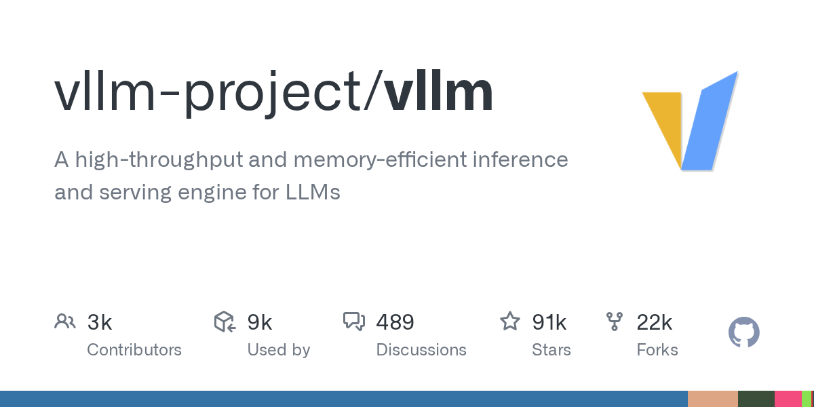

07 GitHub
vllm-project/vllm
사내 LLM 서빙 속도와 비용을 줄이는 vLLM
★ 91,072PythonApache-2.0 사내 사용 가능릴리스 v0.28.0 (08.26)최근 활동 09.06테스트 있음예제 있음AGENTS.md 있음

vLLM은 오픈모델 운영에서 가장 자주 거론되는 추론 엔진 가운데 하나다. 목표는 같은 장비에서 더 많은 요청을 더 낮은 지연으로 처리하는 일이다. 단순 라이브러리로도 쓰고, API 서버로 바로 열 수도 있다. 이번 릴리스에는 성능 개선과 하드웨어 지원 확대가 많이 들어갔다.
무엇을 하는 물건인가
vLLM은 대형 언어모델 추론과 서빙을 빠르고 쉽게 하려는 라이브러리다. Hugging Face의 여러 모델을 바로 붙일 수 있다. OpenAI 호환 API 서버와 Anthropic Messages API, gRPC도 지원한다. 같은 자원으로 더 많은 요청을 처리하도록 돕는 도구에 가깝다.
스펙과 도입 조건
- Python 기반 라이브러리다.
- pip와 uv로 설치할 수 있다.
- 개발용으로는 소스 빌드도 지원한다.
- Docker 이미지를 제공한다.
- OpenAI 호환 API 서버 형태로 띄울 수 있다.
- 외부 API 키 필요 여부는 이 저장소 기준으로 적혀 있지 않다.
- NVIDIA GPU, AMD GPU, Intel GPU와 x86, ARM, PowerPC CPU를 지원한다.
- Google TPU, Intel Gaudi, IBM Spyre, Huawei Ascend, Rebellions NPU, Apple Silicon, MetaX GPU용 플러그인도 지원한다.
- 라이선스는 Apache-2.0이다.
- 최신 릴리스는 v0.28.0이며 2026-08-26에 공개됐다.
이럴 때 쓰면 좋다
- 사내 규정 문서 검색 챗봇을 자체 GPU 서버에 올리고 OpenAI 호환 API로 여러 업무 시스템이 함께 붙을 때 적합하다.
- 고객 문의 요약이나 상담 분류 모델을 배치와 실시간으로 같이 운영해야 할 때 요청 묶음 처리 기능이 도움이 된다.
- 계열사별로 다른 오픈모델을 시험하면서 같은 서빙 인터페이스를 유지하고 싶을 때 유용하다.
핵심 기능
- PagedAttention, 연속 배칭, prefix caching으로 메모리와 처리량을 최적화한다.
- OpenAI 호환 API 서버와 Anthropic Messages API, gRPC를 지원한다.
- 병렬 샘플링, beam search, structured output, tool calling, reasoning parser를 지원한다.
성능과 운영 비용
vLLM은 처리량과 메모리 효율을 앞세운다. 핵심 기법으로 PagedAttention, 연속 배칭, chunked prefill, prefix caching을 쓴다. 양자화는 FP8, INT8, INT4, GPTQ, AWQ, GGUF 등 여러 방식을 지원한다. 하드웨어 선택 폭도 넓다.
이번 v0.28.0 릴리스에는 Kimi-K3와 DeepSeek V4 최적화가 크게 들어갔다. Kimi-K3에서는 커널 수준에서 1.5~3배 속도 향상을 적었다. DSpark TTFT는 약 60% 개선했다고 밝혔다. shared-expert sharding을 선택하면 GPU당 메모리 약 17 GiB를 아낄 수 있다고 적었다.
다만 이 수치들은 릴리스 노트에 적힌 프로젝트 측 설명이다. 모델과 커널, 병렬화 방식, 하드웨어 조건이 함께 바뀐다. 실제 사내 성능은 같은 모델, 같은 입력 길이, 같은 GPU에서 다시 재야 한다.
| 플랫폼 | 설치 또는 이미지 |
|---|---|
| PyPI (CUDA 13.0) | pip install vllm |
| PyPI (CUDA 13.0, uv) | uv pip install vllm --torch-backend=auto |
| ROCm | pip install vllm --extra-index-url https://wheels.vllm.ai/rocm/0.28.0/rocm722 |
| CUDA 13.0 기본 이미지 | docker pull vllm/vllm-openai:v0.28.0 |
| ROCm 이미지 | docker pull vllm/vllm-openai-rocm:v0.28.0 |
| CPU 이미지 | docker pull vllm/vllm-openai-cpu:v0.28.0 |
사내 도입 체크
- 외부 API 호출 없이 사내에서 자체 서빙하는 용도로 쓸 수 있다. 다만 붙일 모델의 다운로드 경로와 라이선스는 별도 확인이 필요하다.
- 모델 입력과 출력이 사내 서버에 머물 수 있어 데이터 반출 통제에 유리하다.
- 유지보수 주체는 UC Berkeley 출발의 커뮤니티 조직이다.
- 상용 LLM 서빙 플랫폼과 추론 게이트웨이를 일부 대체할 수 있지만, 운영 모니터링과 장애 대응 체계는 별도 구성해야 한다.
주요 용어
원문 정보
제목: vllm-project/vllm
최근 활동: 2026.09.06